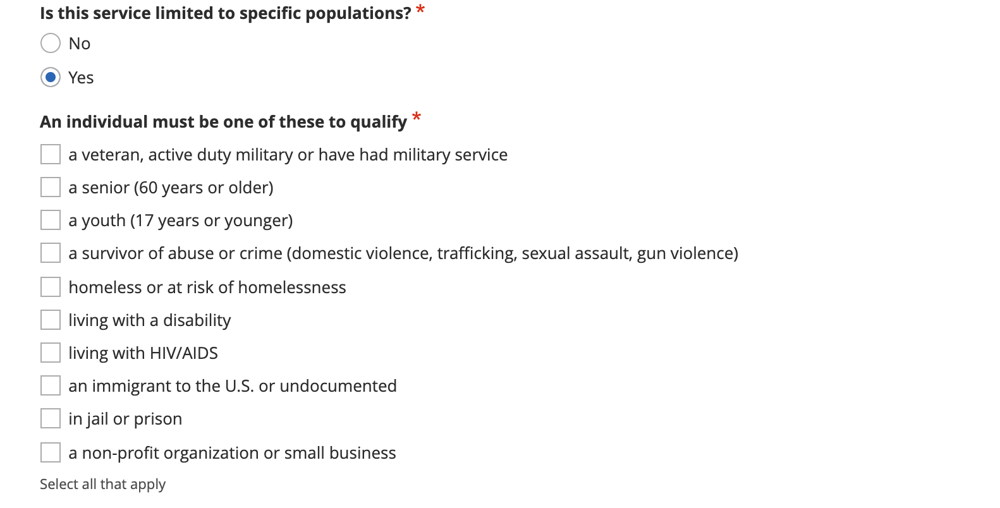
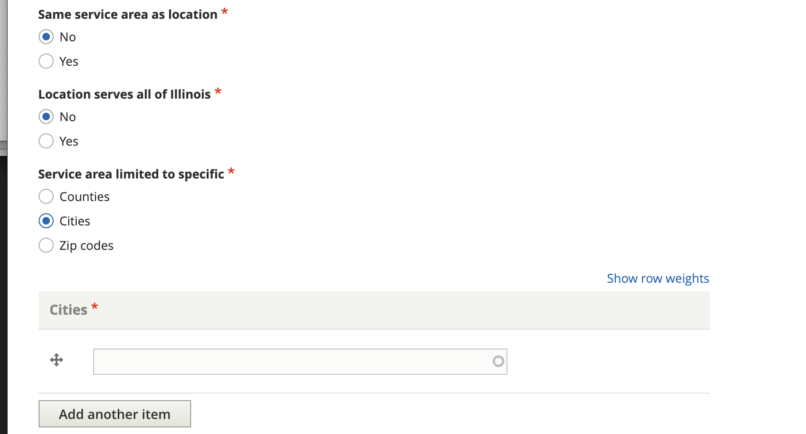
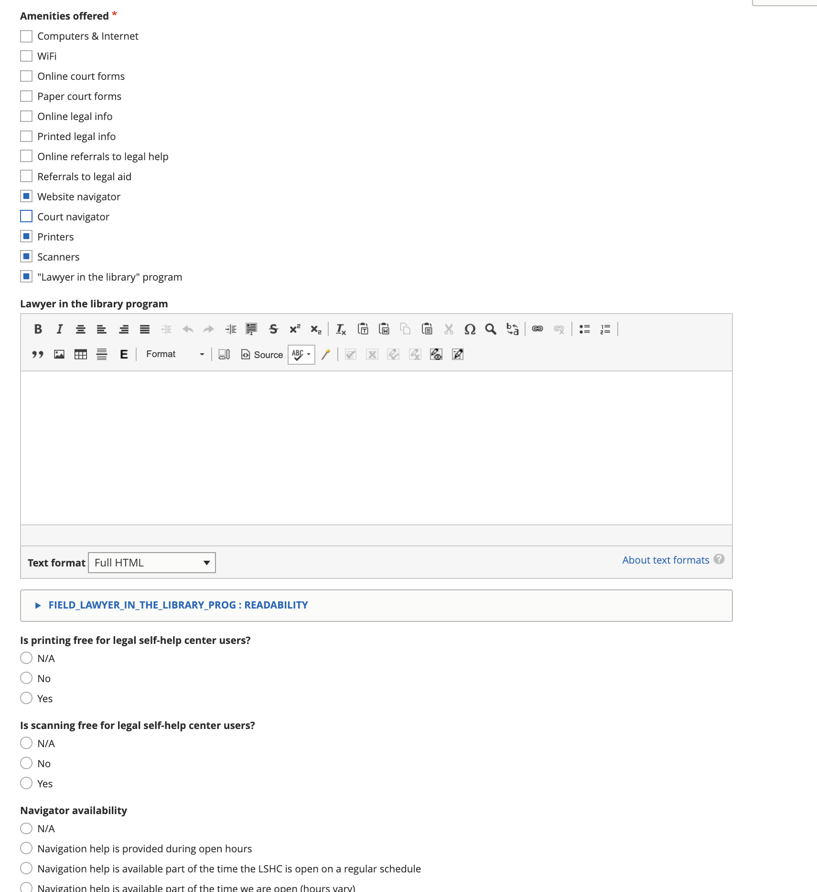

Managing Location Services¶
Locations within an organization have services. An organization may have one service or may have multiple services, each with different eligibility rules and service areas.
ILAO staff, organization managers, and OTIS managers can all add or edit locations.
The add/edit location form is the same for both ILAO staff and organization/OTIS managers.
Note
Because of the complexity of the logic behind the location services form, it does take longer than other forms to load.
When should a service be created¶
Add a service for each project or program an organization offers (and for which they want to get referrals). Do not lump services together if they vary by:
- Income eligibility
- Service area
- Days and hours open
- Demographic eligibility (kids, seniors, homeless, veterans, etc.) or
- Legal issue(s) or problem code(s)
Types of Location Services¶
Our platform supports five types of location services, each with different fields that must be captured in the location services form. These are:
- Direct representation: select this if you offer extended representation, advice, brief services, pro bono placements, or mediation/ADR services
- Legal self-help center: select this if your service helps people with legal information and tools but does not provide legal representation (including advice or brief services). A center has a physical location where services are provided.
- Legal information and education: select this if your service helps people with legal information and tools but does not provide legal representation (including advice or brief services) and may or may not be staffed by attorneys.
- Lawyer referral service: select this if your service connects people in need to legal representation to lawyers with experience in the area of need.
- Policy, support other: select this if your service does policy work, provides support to legal aid advocates or pro bono outside of your own direct representation services.
Common Elements¶
All 5 types share some fields:
- Title
- Whether the service is open or not. A service must be both open and published to be returned in referrals or displayed on the website.
- Location. The location associated with the service.
- Service type (the 5 available types)
- Phone number
- Income eligibility
- Populations
- Service area
- Parent organization
Todo
The location dropdown is difficult to use as it list the locations by name and does not filter out locations organization managers do not manage.
Phone number¶
Every service requires a phone number. By checking “Yes” to “Same phone number as location,” the phone number from the location will be copied.
Income eligibility¶
Every service should provide income eligibility and costs. These can be inherited from the location by checking “Same income eligibility as location” or be entered individually if they differ from the location.
Like the location, there are 4 options:
- Free to everyone. This should be used when there is generally no charge and everyone is eligible.
- Free to eligible persons/entities. This should be used when the location generally has income limits. For example, the location only serves clients with income less than 125% of the federal poverty level.
- Sliding scale based on income.
- Flat fee regardless of income
When free to eligible persons/entities is selected, the user is then required to set an income limit and apply an income standard.

When the user selects sliding scale or flat fee, a description of those fees is required.

Populations¶
Services can be limited to one or more populations. Users self-identify populations on the main Get Legal Help page and referrals will not return any population-restricted service the user does not match and OTIS will prioritize population-specific services over unrestricted services.
Note
Populations are managed in the intake populations taxonomy. Only ILAO staff can add or edit this taxonomy.
Service area¶
The service can inherit the service area from the location by checking “Yes” to the “Same service area as location” question. Or the service can set its own service area.
For example, a service that serves Kane, Kendall, and DeKalb counties would have the limit to specific area set to Counties and then would list the 3 counties. If a location serves only part of a county (for example, just the city of Chicago in Cook county, the limit to specific area should be set to Cities and Chicago should be listed).
Note
It is not possible to limit a service to a mix of counties, cities, and zip codes. In those scenarios, multiple services should be created with different service areas.
Direct Representation¶
Services designated as the type “Direct representation,” have the following additional fields:
- Whether the service is a hotline
- Whether the service is an advice desk or walk-in clinic
- Level of service provided. This is a multi-select and includes options for extended representation, brief services, advice, mediation/ADR, and pro bono placement.
- How the service is delivered (in person, phone, or online/remote)
- Practice areas
- Average volume for the service
- Application process
- Service availability
- Hours
- Holidays
Level of service¶
This allows multiple selections. We have defined most of these terms as:
- Extended representation: Extended representation is when a lawyer takes your case from beginning to end. The lawyer will advise you on your case, draft legal papers, negotiate with the other party, and appear in court for you.
- Advice: Advice is when a lawyer tells you how the law applies to the facts of your case. This may happen in a private meeting, phone call, letter or online portal.
- Brief Service: Brief service is when a lawyer gives you legal advice and also provides another service, such as drafting or reviewing court papers for you.
- Pro bono placement: Pro bono lawyers are attorneys who volunteer for a legal aid program. The legal aid program may place your case with a volunteer lawyer.
Practice areas¶
From ILAO’s legal issues taxonomy, this is a hierarchical list of legal problems. Legal issues at the service level must be tagged individually.
Note
This is different than legal content, where checking a lower level term automatically inherits everything above it.
Average volume for the service¶
This should be a number. It is used to weight referrals in that services that have more capacity will be returned more often than other referrals.
Application process¶
The application process supports 5 options:
- Telephone
- Walk-in
- Online
- Online through IllinoisLegalAid.org
For each option other than Online through IllinoisLegalAid.org, a text field allows for a description of the process to apply using that method. For email applications, an email address is also required.

Checking the Online through IllinoisLegalAid.org exposes the organization to our etransfer system but otherwise has no effect until ILAO staff has configured the organization for online intake.
Hours of operation fields¶
Service availability indicates if the service has limited hours or is available at all times.
Services can inherit the hours of their location by selecting “Yes” to the same hours as location field.
If they select “No,” they are must indicate if the service is open at least weekly. When a location is open at least 1 day every week, the “Is this location open at least weekly?” should be set to Yes.
The weekly hours form allows one to:
- Set individual hours per day
- Set up to 4 time slots per day; for example: Monday 8 am - 12pm, 1pm - 5pm

When a location is not open at least once a week, then we have to use the irregular hours form. This form requires:
- setting a start date for the rule
- setting an end date for the rule
- setting a rule. The rule can be generated using this online tool and then copied and pasted in.

Note
Same hours as location, hours of operation, and dates and hours are ignored when service availability is 24/7.
Holidays¶
Holidays should be set for the service only when they are different from the location. If they are the same, one should set the Same holidays as location to yes.
When holidays are set for a service:
- When used in online triage and intake, the holidays will not show up in callback hours options
- When used in referrals, the displayed hours will show the holidays as a closed date.
Holidays are managed in the holidays taxonomy. Common Illinois and Federal holidays are included in the taxonomy.
Note
Custom holidays can be added to the holiday taxonomy to accommodate unusual events where one or more organizations needs to be closed (such as a staff retreat) or for unusual occurrences (such as the every 4-5 years when the day after Thanksgiving is not the 4th Friday).
Legal information and education¶
Services designated as the type “Legal information and education (not a legal self-help center),” have the following additional fields:
- Practice areas
- Service availability
- Hours
- Holidays
Legal Self-Help Center¶
Services designated as the type “Legal information and education (not a legal self-help center),” have the following additional fields:
- Amenities offered
- JusticeCorps availability
- Website address
- Featured content
Note
Because legal self-help centers are always a single location with a single service, service availability, hours and holidays are managed only at the location level.
Amenities offered¶
The amenities offered list is pulled from the amenities taxonomy.
- If lawyer in the library is an amenity, there is a field to provide a description
- If printers are selected as an amenity, there is a field to indicate if printing is free, and a field to provide a description when printing is not free.
- If scanners are selected as an amenity, there is a field to indicate if scanning is free, and a field to provide a description when scanning is not free.
- If website navigator is an amenity, there is a field to indicate navigator availability, and when it is on a part-time regular schedule, a field to indicate the availability.
Featured content¶
LSHC pages feature a list of legal content that the local center has identified as relevant to their users.

Featured content is limited to legal content and to 6 items.
Lawyer Referral Service¶
Services designated as the type “Lawyer Referral Service,” have the following additional fields:
- Application process
(see Direct Representation for field information)
Policy, impact litigation, suppor or other¶
Services designated as the type “Policy, impact litigation, suppor or other,” have the following additional fields:
- Practice areas
- Service availability
- Hours
- Holidays
(see Direct Representation for field information)